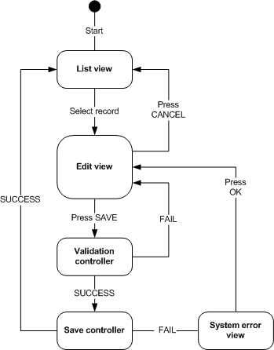

<html>
	<head>
		<meta http-equiv=content-type content="text/html; charset=UTF-8">
	</head>
</html>
<body>
<p>A lightweight MVC framework.</p>
<p>
	This framework borrows on some of the ideas found in classic web MVC frameworks such as Struts, with the
	"pull-style" MVC paradigm found in JSF, to produce a lightweight view flow framework suitable for 
	object-oriented user interface toolkits such as <a href="http://java.sun.com/docs/books/tutorial/uiswing/">Swing</a>, 
	<a href="http://echo.nextapp.com/site/">Echo</a>,
	<a href="http://www.millstone.org/">Millstone</a>, <a href="www.thinwire.com">Thinwire</a> etc.
</p>

<div class="toc">
	<p><u>Table of contents</u></p>
	<ol>
		<li><a href="#concepts">Key concepts</a></li>
		<li><a href="#example">Example scenario</a></li>
		<ol>
			<li><a href="#required-classes">Required classes</a></li>
			<li><a href="#sample-controller-code">Sample controller code</a></li>
			<li><a href="#sample-list-view-code">Sample list view code</a></li>
			<li><a href="#sample-edit-view-code">Sample edit view code</a></li>
			<li><a href="#sample-error-view-code">Sample error view code</a></li>
		</ol>
		<li><a href="#configure-code">Configuring the sample programatically</a></li>
		<li><a href="#configure-spring">Configuring the sample via Spring</a></li>
	</ol>
</div>

<h1 id="concepts">Key concepts</h1>
<h2>Flow</h2>
<p>
	The framework functions via the configuration of <a href="Flow.html"><em>flows</em></a>, which are then managed in the context of
	a particular <em>container</em> visible in the user interface.  This container might be the whole screen, or
	just a part of it.  Because of this, the framework allows you to have more than one flow executing on the overall
	screen at one time.
</p>
<p>
	A flow is made up of <em>views</em>, <em>controllers</em> and other <em>managed objects</em>.
</p>

<h2>View</h2>
<p>
Views, unsurprisingly, have the reponsibility of presenting data to the user.  They will extend
the relevant classes in your UI framework, such as Panel, Container, etc., and take data from the model
to present to the user.
</p>

<p>Views must implement the <a href="View.html">View</a> interface, which is a very simple interface allowing
views to construct their user interface components at the correct point in the lifecycle, when it can be guaranteed
that references to other objects in the flow (such as controllers or other managed objects) will resolve correctly,
and that those objects will have all been configured.</p>

<p>When an action related to navigation occurs within the view, the view fires a <em>resolution</em>, which is
picked up by the flow manager, and is used to determine where to go next - either to invoke a certain controller method
so that model updates can be handled, or to navigate to a different view.</p>

<p>For instance, if we are in a list of orders, and the user double-clicks on a particular order, we would fire a resolution
named 'ACTIVATE', and allow the flow mappings to take care of where we go next (presumably to the panel where we edit
a particular order).</p>

<p>Note that we would not name our resolution 'EDIT', since this makes assumptions about where the flow takes us, and the order
list view may appear in flows where we do not go to the edit panel when a row is double-clicked.  We call our resolutions
what has happened, not what we think they will do in a particular flow configuration.  This way, we remove hard-coded logic from views about system navigation, enforcing a separation of concerns which
makes customisation of application behaviour far easier to implement.</p>

<p>Of course, you can call your resolutions what you like, but sticking to the above rule will save you getting confused
in the long term.</p>

<h2>Controller</h2>
<p>Controllers mediate between the model and the view, retrieving the model, and processing user interface events to 
potentially change the model (normally via the use of other configured services).</p>

<p>Controllers have <em>processing methods</em> which are invoked upon a user action taking place in the view.  
These methods take no arguments, and return a string to indicate the resolution, or outcome, of the method.</p>
  
<p>For instance, when the user presses the 'Save' button on an edit panel, we would configure the flow to call
the <code>save()</code> method on the controller.  That method can have two possible <em>resolutions</em>:  either it succeeds
in the save operation, or it fails.  If it succeeds, we want to go back to the list panel.  If it fails, then we
want to remain on the edit panel, where we will presumably show the reasons for the failure to the user.</p>

<p>The controller indicates which resolution has occurred by returning an appropriate string from its processing method, e.g.</p>
<pre class="code">
public String save() {
  String ret = "SUCCESS";
  try {
    myService.save(theObject);
  }
  catch(ValidationException ex) {
    ... add some validation messages to a messages object ...
    ret= "FAIL";
  }
  return ret;
}
</pre>

<h2>Resolution mappings</h2>
<p>In order to make a flow, we need to map <em>resolutions</em>, which occur in views and controllers, to appropriate <em>destinations</em>.</p>
<p>For instance
<ul>
	<li>when the users presses save on the edit view, call the save method of the order controller;</li>
	<li>when the save method of the order controller returns 'SUCCESS', go back to the list view;</li>
</ul>
</p>

<h2>Context</h2>
<p>The <a href="Context.html">context</a> provides views and controllers with access to the current state of the flow, and allows them to access the other
particiapting objects.</p>

<p>This allows, for example, views to obtain a reference to a controller or other managed object in the flow, and to invoke a method on it.
This facilitates a pattern known as 'pull-style' MVC, where views 'pull' information that they need from the controller.  You will find
endless debates about whether this is the best pattern to use, but anyhow it is the one facilitated by this framework.</p>

<p>For example, the list view may pull the controller out of the current context and ask it for the table model which it will use to 
populate its data table.  The controller will most likely create the model lazily when asked.  Further details of this are given in
the sample scenario below.</p>

<p><b>IMPORTANT</b> - when writing views, be sure to read and implement the notes on the {@link org.sgodden.ui.mvc.Context#getCurrentContext()} method, 
or you may end up with the wrong context object when responding to user interface events.  These notes do not apply to controllers, since
the correct current context will always have been (re)set on the thread by the time a controller processing method
is invoked.</p>

<!-- EXAMPLE -->
<h1 id="example">Example</h1>
<p>Let's take a simple example, represented by the following diagram:</p>



<p>In textual form, assuming that we are doing this in the context of customer orders, the rules for this flow
can be expressed as follows:
<ol>
	<li>I start off at the order list view;</li>
	<li>If the user selects a row, I go the edit view;</li>
	<li>If the user presses the cancel button in the edit view, we go back to the list view;</li>
	<li>If the user presses the save button in the edit view (presumably after having altered some values), then
	we invoke the validation controller;</code></li>
	<li>If the validation controller succeeds, we invoke the save controller;</li>
	<li>If the validation controller fails, we return to the edit view;</li>
	<li>If the save controller succeeds, we return to the list view;</li>
	<li>If the save controller fails, we go to the system error view;</li>
	<li>If the user presses the ok button in the system error view, we go back to the list view.</li>
</ol>
</p>

<p>An additional requirement is that I should be able to filter the list view with a partial match on the order number.</p>

<h2 id="required-classes">Required classes</h2>
<p>We will require the following classes in order to fulfill this flow:
<ul>
	<li><em>Order service</em> - conceptually, we would expect there to be some kind of stateless, transactional 
	service object for customer orders.  This object retrieves lists and individual orders, as well as 
	validating and saving those individual orders.  Thus, while
	not explicit in the flow, we will assume its existence;</li> 
	<li><em>Controller</em> - for the sake of simplicity, we'll have one controller, which does everything: 
		<ul>
			<li>Constructs a table model from orders retrieved from the order service;</li>
			<li>Updates that model in response to the user entering a partial order number in the list view;</li>
			<li>Retrieves the correct user from the order service based on the id of the record selected
			in the list view;</li>
			<li>Delegates validation of that user object to the order service when the user presses save on the 
			edit view;</li>
			<li>Delegates persistence of the successfully validated order to the order service, should it pass validation;</li>
		</ul>
	</li>
	<li><em>List view</em> - to display the list of orders to the user;</li>
	<li><em>Edit view</em> - to allow the user to edit an individual order;</li>
	<li><em>System error view</em> - to inform the user that a system error has occurred, and to tell them how to report
	it etc.</li>
</ul>
</p>

<p>It's important to remember that one instance of each of these objects will be created when the flow is created, and attached
to the flow.  That instance will then be re-invoked as the step in the flow to which it is attached is (re)invoked.  So as the user
travels between the list and edit, and back to list and back to edit for a different order, the same edit view object is re-invoked.
It is therefore important that the object reconfigures itself whenever the 
{@link org.sgodden.ui.mvc.View#activate()} method is invoked.</p>

<p>There now follows some sample code from each of these classes.  For the sake
of brevity, the code here is not robust, only sufficient to demonstrate the point.</p>

<h3 id="sample-controller-code">Sample code from the Controller</h3>
<pre class="code">
public class OrderController 
    implements Serializable { 
  /*
   * controller must be serializable so that 
   * session state can be saved in web applications
   */
  
  /*
   * The order service, which will presumably
   * be injected by your DI framework.
   */
  private OrderService orderService;
  
  /*
   * The table model for the list view.
   */
  private TableModel tableModel;
  /*
   * The order being edited, for the edit view.
   */
  private Order editedOrder;
  /*
   * Messages generated by the last validation attempt.
   */
  private Message[] messages;
  /*
   * Details of any exception thrown by the save step.
   */
  private Exception lastException;

  /**
   * Returns the table model,
   * creating it if necessary.
   */  
  public TableModel getTableModel() {
    if (tableModel == null) {
      List&lt;Order&gt; orders = orderService.getOrderList();
      ... make a table model from the list of orders ...
    }
    return tableModel;
  }
  
  /**
   * The list view invokes this method when the user
   * changes the order number they are filtering on.
   */
  public void setOrderNumber(String orderNumber) {
    /*
     * Update the data in the table model.
     * The view should have added itself as a listener
     * on the table model, so this will result in an
     * auto-magical update of the list seen by the user.
     */
    List&lt;Order&gt; orders = orderService.getOrderList(orderNumber);
    Object[][] data = makeObjectArrayFromOrders();
    tableModel.setData(data);
  }
  
  /**
   * Invoked by the list view when the row is selected
   * by the user.
   */
  public void setSelectedId(long id) {
    editedOrder = orderService.get(id);
  }
  
  /**
   * Invoked by the edit view when it is activated.
   * The edit panel will then ensure that values entered
   * in its text fields are updated into the order object
   * before it fires any resolutions (such as the user pressing
   * the save button).
   */
  public Order getEditedOrder() {
    return editedOrder;
  }
  
  /**
   * Validates the order and returns a resolution indicating
   * success or failure.
   * Called by the framework when the user attempts to save
   * the edited order.
   */
  public String validate() {
    String ret = "SUCCESS";
    messages = orderService.validate(editedOrder);
    if (messages != null) {
      ret = "FAIL";
    }
    return ret;
  }
  
  /**
   * Saves the edited order.
   * Called by the framework when the validation step succeeds.
   */
  public String save() {
    String ret = "SUCCESS";
    try {
      orderService.save(editedOrder);
    }
    catch(Exception e) {
      ret = "FAIL";
      lastException = e;
    }
    return ret;
  }
  
  public Exception getLastException() {
    return lastException;
  }

}
</pre>

<h3 id="sample-list-view-code">Sample list view code</h3>
<p>This is all pseudo-code.  There is no 'addDoubleClickListener' method on JTable.  You can
work out the real code for yourselves.</p>
<pre class="code">
public class OrderListView 
    extends Panel
    implements View, Serializable, TableModelListener, ActionListener {

  private Context context;
  private OrderController orderController;
  
  private JTextField filterField;
  private JButton filterButton;
  private JTable theTable;
  
  public OrderListView() {
    super();
    context = Context.getCurrentContext(); // has to be done here or in activate
    orderController = (OrderController) context.evaluate("orderController");  
  }
  
  public void activate() {
    
    .. add various components including the field to filter on order number ..
	
    TableModel tableModel = orderController.getTableModel();
    /* Swing JTables automatically refresh themselves if the
     * model changes, but you might need to do add yourself
     * as a listener on the model and do something yourself
     * if using a different UI framework.
     */
    theTable = new JTable(tableModel);
    theTable.addDoubleClickListener(this);
  }
  
  public void actionPerformed(ActionEvent e) {
    if (e.getSource() == filterButton) {
      controller.setOrderNumber(filterField.getText());
      /*
       * That's all we need to do - the controller will
       * update the model, and the JTable will refresh itself.
       */
	}
  }
  
  public void doubleClickPerformed(ActionEvent e) {
    long id = workOutTheIdFromTheSelectedRow();
    controller.setSelectedId(id);
    /**
     * Tell the context that the activate
     * resolution has occurred.
     * This will most likely result in a different
     * view being displayed.
     */
    context.handleResolution("ACTIVATE");
  }

}  
</pre>

<h3 id="sample-edit-view-code">Sample edit view code</h3>
<pre class="code">
public class OrderEditView
    extends JPanel
    implements View, Serializable, ActionListener {

  private Context context;
  private OrderController controller;
  private Order theOrder;
  
  ... various text fields to hold values ...
  
  JButton saveButton;

  public OrderEditView(){
    super();
    context = Context.getCurrentContext(); // has to be done here or in activate
    orderController = (OrderController) context.evaluate("orderController");  
  }

  public void activate() {
    theOrder = orderController.getEditedOrder();
	
	// create components first time only
	if (saveButton == null) {
      saveButton = new JButton("Save");
	  saveButton.addActionListener(this);
	  
      ... similarly for cancel button ...
    
      ... create various text fields to hold values etc. ...
    }
	
	// and populate from the order values
	updateScreenFieldsFromOrder();
  }
  
  public void actionPerformed(ActionEvent evt) {
    if (evt.getSource() == saveButton) {
      updateOrderFromScreenFields();
      context.handleResolution("SAVE");
    }
    else {
      context.handleResolution("CANCEL");
    }
  }

}
</pre>

<h3 id="sample-error-view-code">Sample error view code</h3>
<p>I'll leave this one largely to your imagination</p>
<pre class="code">
  ...
  
  public void activate(){
    Exception ex = orderController.getLastException();
	... create some UI to show the exception ...
  }
  
  ...
</pre>

<h1 id="configure-code">Configuring the example programatically</h1>
<p>The following code demonstrates how to configure and start this flow programatically, displaying it
using the <a href="swing/ContainerImpl.html">Swing implementation of Container</a> (you can use
this as the basis for implementing Container for your own toolkit - it is very simple):</p>

<pre class="code">
FlowImpl flow = new FlowImpl();

/*-----------------------------------------------------
 * Create the named objects (controllers and views).
 * In real life, everything would normally be configured via
 * your dependency-injection provider.
 */
Map&lt;String, Object&gt; namedObjects = new HashMap&lt;String, Object&gt;();

namedObjects.put("orderController", new OrderController());
namedObjects.put("listView", new OrderListView());
namedObjects.put("editView", new EditPanel());

flow.setNamedObjects(namedObjects);

/*----------------------------------------------
 * Set up the validate and savecontroller steps.
 */
ControllerStep validateStep = new ControllerStep();
validateStep.setStepName("validateController");
validateStep.setObjectName("maintenanceController");

ControllerStep saveStep = new ControllerStep();
saveStep.setStepName("saveController");
saveStep.setObjectName("maintenanceController");

flow.setControllerSteps(new ControllerStep[]{saveStep, validateStep});

/*------------------------------------------------
 * Set up the list and edit view steps.
 */
ViewStep listStep = new ViewStep();
listStep.setStepName("listView");

ViewStep editStep = new ViewStep();
editStep.setStepName("editView");

flow.setViewSteps(new ViewStep[]{listStep, esitStep});
flow.setInitialViewName("listView"); // has to know where to start

/*
 * Set the resolution mappings.
 */
flow.setResolutionMappings(new ResolutionMapping[]{
  createResolutionMapping("listView", "ACTIVATE", "editView", null),
  createResolutionMapping("editView", "CANCEL", "listView", null),
  createResolutionMapping("editView", "SAVE", "validateController", "validate"),
  createResolutionMapping("validateController", "SUCCESS", "saveController", "save"),
  createResolutionMapping("saveController", "SUCCESS", "listView", null),
});

ContainerImpl container = new ContainerImpl(); // you need to implement Container for your toolkit.
FrontController front = new FrontController(container, flow);

JFrame frame = new JFrame("Simple MVC test app");
frame.getContentPane().add(container);

frame.setDefaultCloseOperation(JFrame.DISPOSE_ON_CLOSE);
frame.setSize(300, 300);
frame.setVisible(true);

}

/**
 * Convenience method to create a resolution mapping.
 */
private static ResolutionMapping createResolutionMapping(
    String source, 
    String resolution, 
    String destination, 
    String methodName) {
  ResolutionMapping ret = new ResolutionMapping();
  ret.setSourceStepName(source);
  ret.setResolutionName(resolution);
  ret.setDestinationStepName(destination);
  ret.setControllerMethodName(methodName);

  return ret;
}	
</pre>

<h1 id="configure-spring">Configuring the example via Spring</h1>
<p>Since all the key configuration parameters are available as simple setters on the <a href="impl/FlowImpl.html">FlowImpl</a> class,
configuration in a DI framework such as Spring is easy.</p>
<p>Since our flow holds state, all beans used within it must be configured with scope 'prototype' so that new ones are created
each time a new flow is created.  If we were to leave them with the default 'singleton' scope, then everyone's flows would 
trample over each others' state.</p>
<p>You can find our simple example above expressed as a spring configuration fragment <a href="doc-files/sample.xml">here</a>.  Users of other DI frameworks should be able to
work out their own analagous code.</p>

</body>